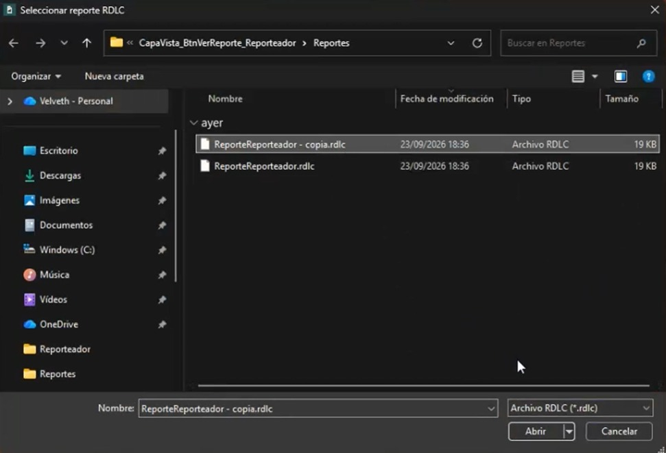

Funcionamiento
Hacer click en el botón Seleccionar Ruta
Al hacer clic en el botón, el sistema abre el navegador de archivos de Windows para que el usuario pueda ubicar el reporte deseado.

Confirmar la selección
Una vez seleccionado el archivo, se da clic en el botón Abrir para confirmar la elección.
